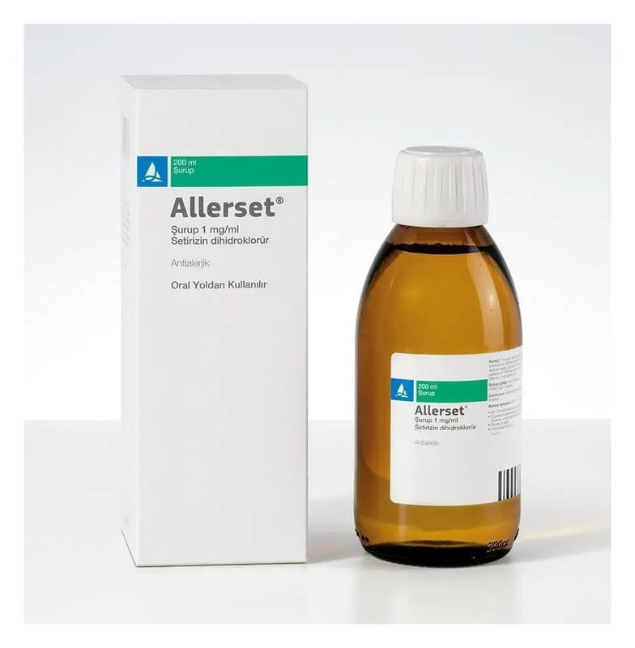

Allerset 1 mg/ml Şurup, 200 ml

Ne için kullanılır
KT · Bölüm 1ALLERSET®, 200 ml şurup içeren bal rengi şişelerde, 5 ml’lik dereceli plastik kaşık ile birlikte sunulur. Renksiz, hemen hemen berrak çözelti görünümündedir.
ALLERSET®, alerjik nezle ve kurdeşen tedavisinde kullanılan bir ilaçtır.
ALLERSET®; Erişkinler ile 2 yaş ve üzeri çocuklarda; Alerjik nezlenin burun ve göz ile ilgili belirtilerinin tedavisinde ve ürtikerin (kurdeşen) tedavisinde kullanılır.